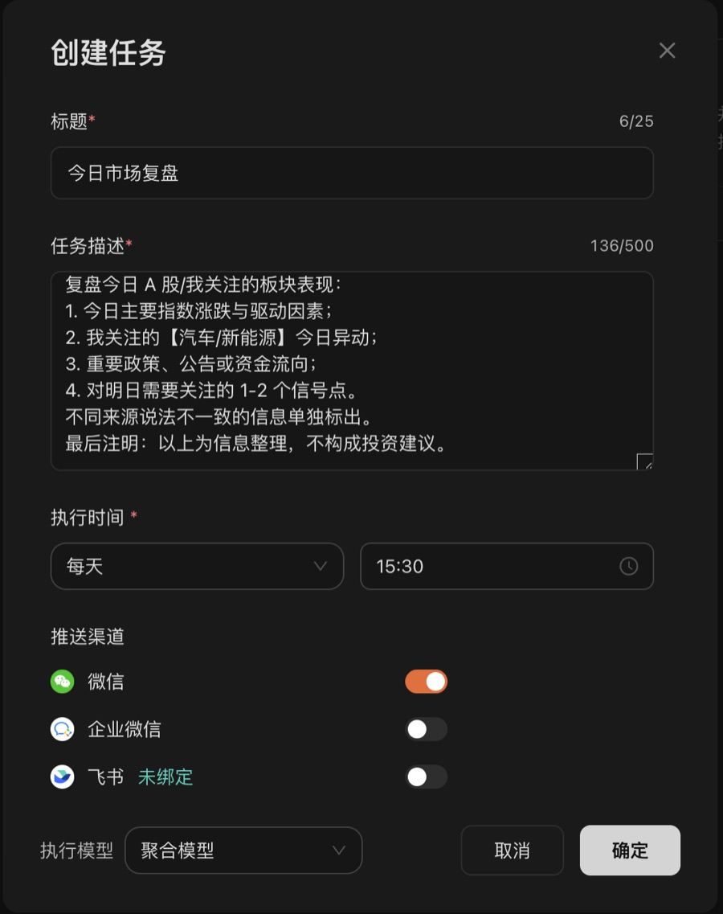
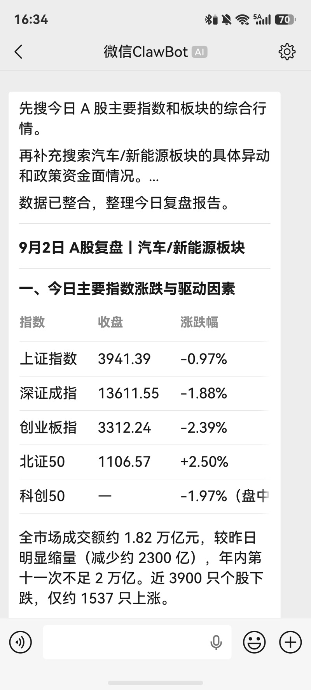
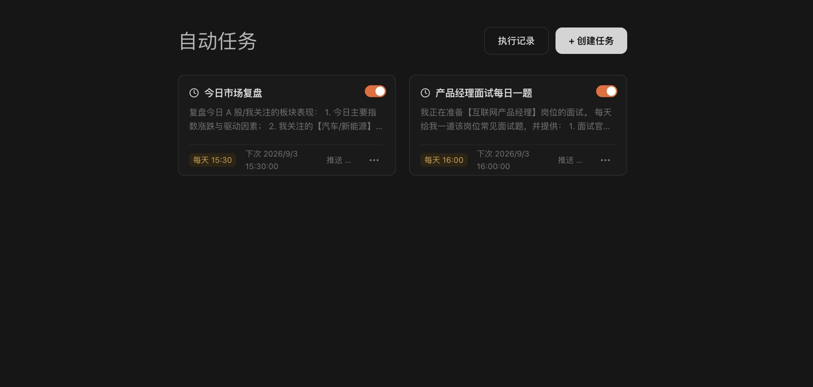

定时任务 · 上班族散户
上班没空盯盘
收盘后
复盘自己来
每天 15:30，一份复盘自动发到微信。
不用打开任何 App。
Lucimix
上班族散户没空盯盘：每天 15:30，收盘复盘自动发到微信
白天上班，根本没时间看盘。收盘后刷资讯，标题一个比一个吓人，看完更焦虑，还是不知道今天到底发生了什么、跟我的持仓有什么关系。
现在我把这件事交给了 Lucimix 的定时任务：每天收盘后，一份复盘自动发到我微信。不用打开任何 App。
设置只要 1 分钟
在「定时任务」里点创建任务，填这几项：
- 标题：今日市场复盘
- 执行时间：每天 15:30
- 推送渠道：微信（需要先扫码绑定）
任务描述可以直接抄我的，把板块换成你关注的：
可复制任务描述复盘今日 A 股/我关注的板块表现：
1. 今日主要指数涨跌与驱动因素；
2. 我关注的【汽车/新能源】今日异动；
3. 重要政策、公告或资金流向；
4. 对明日需要关注的 1-2 个信号点。
不同来源说法不一致的信息单独标出。
最后注明：以上为信息整理，不构成投资建议。

收到的是什么样子？
到点之后，微信上直接收到一份结构化的复盘：先是主要指数的收盘点位和涨跌幅，再是成交额和涨跌家数，然后是你关注板块的异动。


它和普通 AI App 有什么不一样？
- 不用你去问：大多数 AI App，你不打开，它就什么都不做。
- 不用电脑开着：任务在云端执行，手机锁屏也照样收到。
- 按你的关注点写：板块、格式、长度都由任务描述决定，换个描述就是另一份复盘。
以上内容为信息整理，不构成任何投资建议。投资有风险，决策请独立判断。